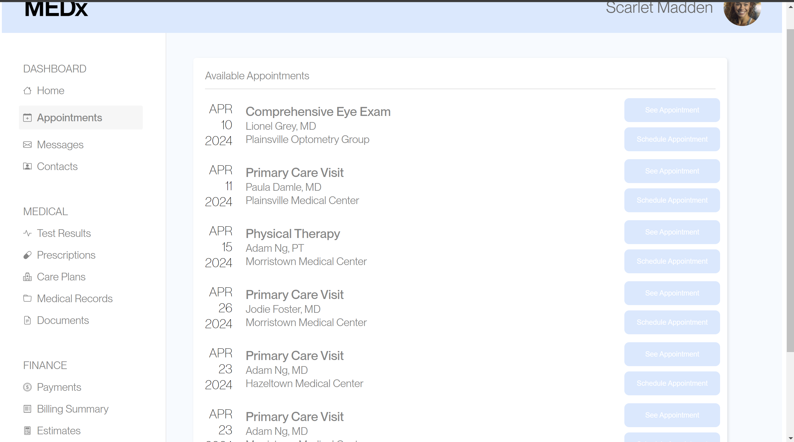

A/B Studio
Text about the studio part of the project
Version A (Original)
Version B (Edited)
Hypotheses
Metrics
- Misclick Rate - the frequency with which users click something else on the page before finding the correct button for the task
- Time on Page - time spent on the webpage for each user group
- Number of Clicks - how many times users clicked on the page
My metric of choice is the number of clicks users used to complete the task. I chose this because I noticed that there was a large variety of clicks used to complete the task, especially in the A task, and I wanted to see what the data looked like comparing the two in terms of clicks. In addition, I think that this is a useful metric because if it takes less clicks, then it can be easier for the user to complete.
Null and Alternative Hypotheses
- Misclick Rate
-
- Null Hypothesis - The misclick rate is the same in sample A and sample B.
- Alternative Hypothesis - The misclick rate from sample A is greater than the misclick rate from sample B.
- Justification - I made this alternative hypothesis because in version A, no one knew how the website worked and it was a confusing interface so more people were more likely to misclick. However, in version B, the interface was more clear and understandable, so it is likely that there was a smaller misclick rate.
- Time on Page
-
- Null Hypothesis - The time spent on page is the same in sample A and sample B.
- Alternative Hypothesis - The time spent on page is greater in sample A than in sample B.
- Justification - I made this alternative hypothesis because in version A, people are more likely to make mistakes because the interface is new and confusing, leading them to spend more time on the page especially if they misclick and make mistakes. On the other hand, if version B is easier to use and understand, users will be able to complete the task in a shorter amount of time because the steps are more clear.
- Number of Clicks
-
- Null Hypothesis: The number of clicks used to complete the task is the same in sample A and sample B.
- Alternative Hypothesis: The number of clicks used to complete the task is greater in sample A than sample B.
- Justification - I made this alternative hypothesis because in version A, people are more likely to make mistakes and end up clicking multiple things, especially wrong things, which will increase the number of clicks. On the other hand, in version B, people will be more likely to find what they are looking for and click a smaller amount of times to get there because the interface is more intuitive and easier to understand through making the buttons and hospital locations more readable.
Predictions
- Misclick Rate
-
- I believe that I will end up rejecting the null hypothesis based on the data. In the data from Version A, about one half of people misclicked at least once during their attempt. However, during Version B testing, no users misclicked. Through testing this data, I expect that the p-value will indicate that the difference between these two findings is significant. Because of this, I expect to reject the null hypothesis that the misclick rate for Version A and Version B are the same.
- Time on Page
-
- I believe that I will end up rejecting the null hypothesis after looking at the data for each version. From version A testing, the majority of data points are over 20,000 milliseconds. However, in Version B testing, the users rarely exceeded 10,000 milliseconds on the page. Due to this large difference I witnessed in the data, I expect that through the tests, the p-value will indicate that the amount of decrease in time on page from Version A to Version B is significant . Thus, I expect to reject the null hypothesis which states that the time on page in Version A and Version B is the same.
- Number of Clicks
-
- I believe that I will end up rejecting the null hypothesis through viewing the data from each version. I noticed that in the version A data, there was a large difference in the number of clicks different people took to complete the task, ranging from 2 to 26. On the other hand, in the Version B data, there was little variability in the number of clicks, as people only used 2-4 clicks. Because of this large difference in the number of clicks used in the different versions, I believe that the p-value will indicate that the amount of decrease in the number of clicks from Version A to Version B is significant. Through this, I expect to reject the null hypothesis which states that the number of clicks in Version A and Version B is the same.
Statistical Tests
Misclick Rate
For the misclick rate, I chose to run a chi squared test because
misclick can be represented as a boolean value which can be split
into two categories: did misclick and did not misclick. In sample
A, 12 users misclicked and 12 users did not misclick. In sample B,
0 users misclicked and 22 users did not misclick. As seen in the
table, the degrees of freedom for this metric is 1, the chi^2
value is 14.88, and the p-value is 0.0001.
Because the p-value<=0.05, we find that the difference between
versions A and B with respect to misclick rate is significant. We
can come to the same conclusion through using the chi square
statistic as well, which is 14.88. We know that we have 1 degree
of freedom, so using the critical value of the chi-square
distribution where alpha=0.05, the chi-square critical value is
3.841. Because the chi^2 statistic, 14.88, is greater than the
critical value, 3.841, the magnitude of difference between the two
groups is significant.
Because the p-value is significant and the chi-square statistic is
significant, we find statistically significant evidence that the
alternative hypothesis is true.
| Outputs | |
|---|---|
| df | 1 |
| chi^2 | 14.8823529411765 |
| p-value | 0.000114428456331361 |
Time on Page
Number of Clicks
asdl;fkj